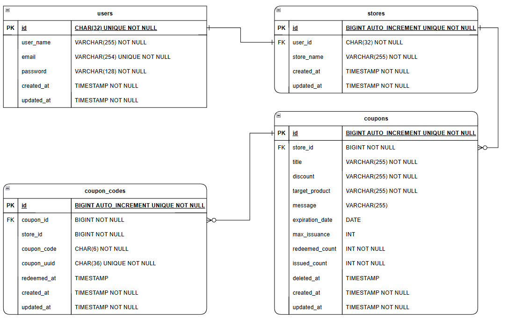
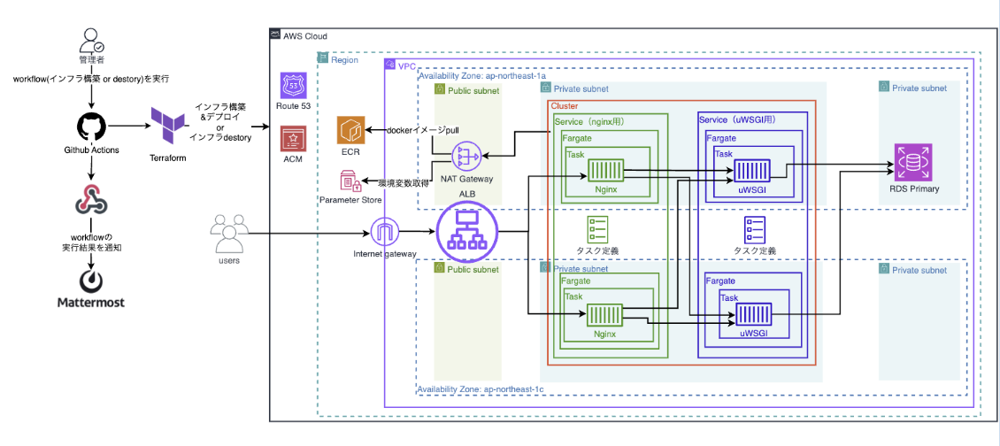

VoucherZ
~個人経営の小規模店舗に向けたクーポン発行アプリ~
【概要】
- paypay等の決済サービス系アプリのクーポン発行機能の手数料が高く、利用が難しい個人経営の小規模店舗が対象。
- 店舗オーナーはクーポン発行・認証機能を利用することで紙ベースのクーポンやポイントカードの作成・管理の手間を解消できる。
- クーポンの利用状況を管理することで、クーポン発行による販促効果をざっくりとした粒度で把握できる。
- 顧客側の認証機能を実装しないことにより、幅広い層の顧客が利用でき、店舗側の個人情報管理の負担も解消できる。
【主な機能】
⭐️：担当部分
＜基本機能＞
- 店主・店舗の認証機能（新規登録・ログイン・ログアウト）⭐️
- クーポン作成・発行・削除機能
- 二次元バーコード・手入力でのクーポン認証機能 ⭐️
【制作期間】
2か月（2025年5月～7月）
【チーム体制】
4名チーム（フロントエンド、バックエンド、インフラ）
自分の役割：リーダー/フロントエンド/バックエンド
【担当範囲】
- ランディングページの実装
- 認証機能のフロントエンド・バックエンドの実装
- クーポン認証機能（手入力コード・二次元バーコード）のフロントエンド・バックエンドの実装
【技術スタック】
-
Frontend


-
Backend


-
Database

-
Infra


【アーキテクチャ】
*以下はチーム開発時に作成した全体設計です。
-
ER図

-
インフラ構成図

【意識した点】
- 高齢の店主や顧客層でも利用可能なUI・UXを検討すること
- スムーズなUXを実現するための非同期処理の実装
- スマホ・タブレットでの利用を想定したレスポンシブデザイン
- HTTPステータスコードに応じたアプリの挙動
【苦労した点】
- アプリの設計やMVPの定義について、拡張性を重視する意見と期限内の完成を優先する意見の中での合意形成
- 堅牢な設計を意識して実装してみたが、Model,View,Formなど、各層ごとの責務を整理して実装すること
- ランディングページなど、レスポンシブデザインの実装と各種デバイスに対応するための微調整の難しさ
- 非同期処理の実装（挙動の整合性を保つ、JsonResponseのデータの値の統一）
【課題】
- チームメンバー全体が意見を出しやすい環境作り
- 意見が対立した時の調整とモチベーションや雰囲気の維持
- 各層の責務に対応したコードの整理や可読性・拡張性の検討
- base.cssやbase.htmlなどフロントデザインを実装する際の設計思想
- github actionsを利用したCI/CDの仕組みの理解
- SOLID原則（インターフェイス分離）の観点から、バックエンドのコードがUIに過度に依存している（密結合）